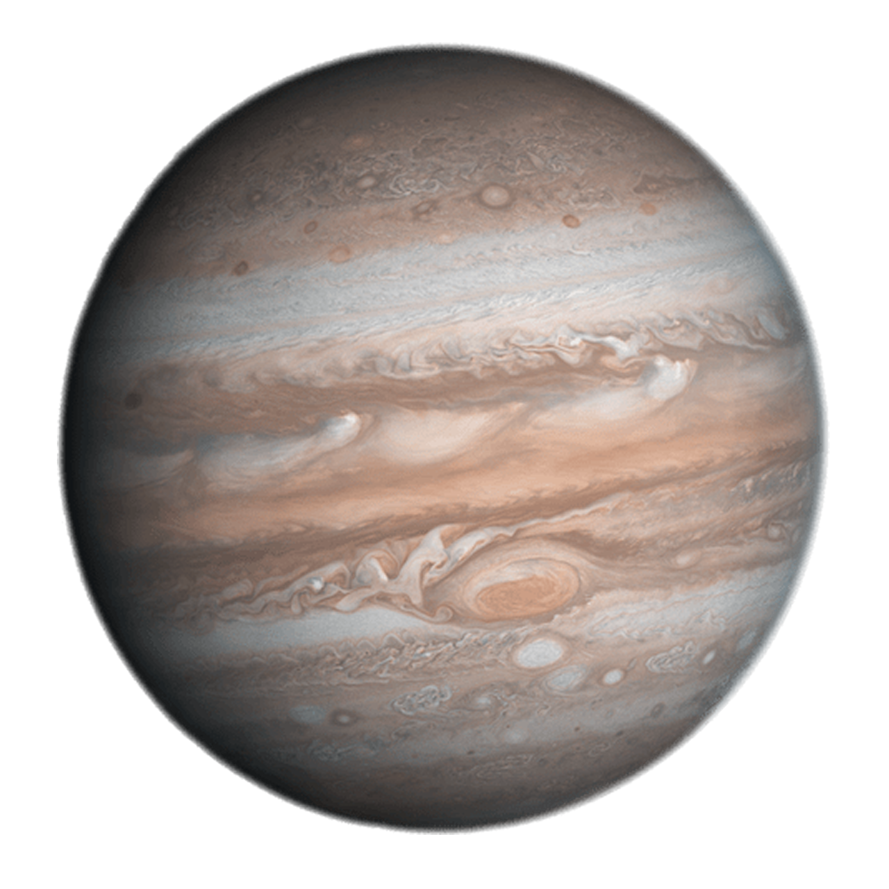
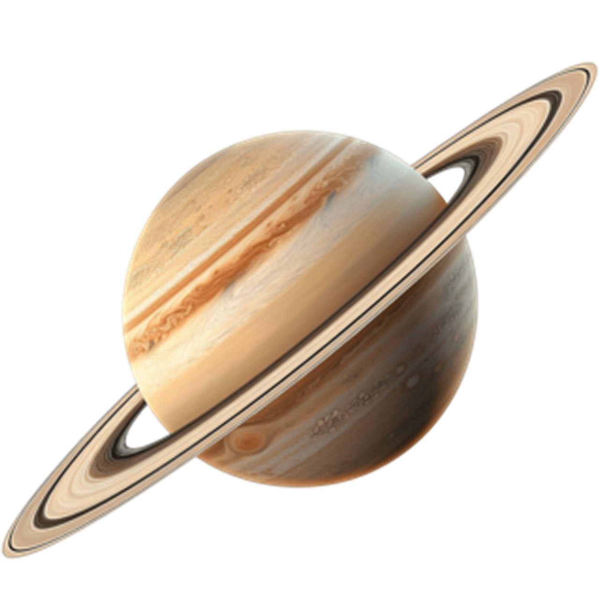
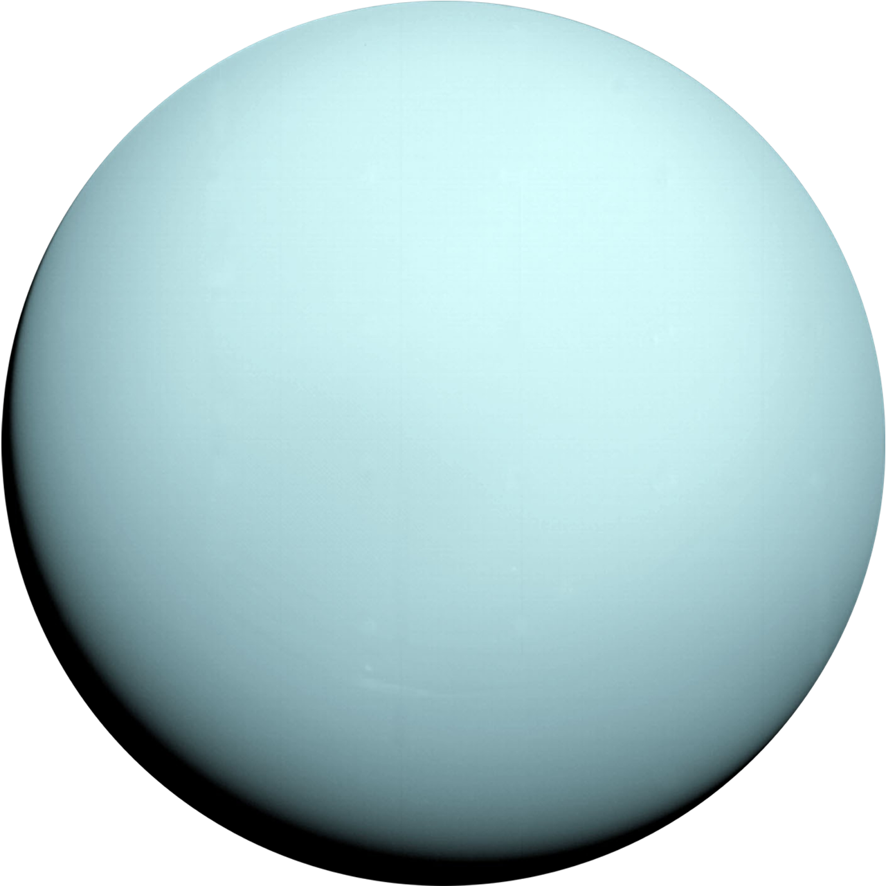

Галактика "Млечный путь"
Газовые и ледяные гиганты
Га́зовые гига́нты — планеты-гиганты, состоящие в основном из водорода и гелия. Планеты этого типа имеют небольшую плотность, короткий период суточного вращения, и, следовательно, значительное сжатие у полюсов. В Солнечной системе к газовым гигантам относят Юпитер, Сатурн, Уран и Нептун.


Юпитер
Крупнейшая планета Солнечной системы, пятая по удалённости от Солнца. Наряду с Сатурном Юпитер классифицируется как газовый гигант.
Подробнее...

Сатурн
Шестая планета по удалённости от Солнца, вторая по размерам планета после Юпитера. Это газовая планета-гигант. Он состоит из газов и не имеет твёрдой поверхности.
Подробнее...

Уран
Уран — седьмая по удалённости планета от Солнца, третья по диаметру и четвёртая по массе. Уран открыт с помощью телескопа.
Подробнее...

Нептун
Нептун — восьмая и самая дальняя от Солнца планета Солнечной системы. Нептун отличаются от более крупных планет-гигантов — Юпитера и Сатурна.
Подробнее...